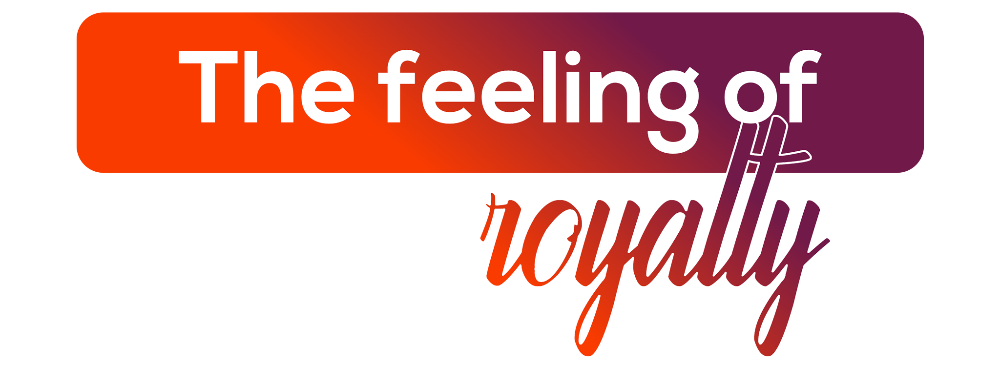

The Feeling of Royalty
Padharo Ni Mhare Desh — Welcome to My Country. A majestic gateway to forts, palaces, and flavours.
Padharo Ni Mhare Desh — Welcome to My Country. This is how Jaipur greets every visitor, and it's not just words, it's a promise. The Pink City, founded in 1727 by the visionary mathematician and astronomer Maharaja Jai Singh II, is a majestic gateway to Rajasthan's royal heritage.
Since 1998, AIESEC in Jaipur has proudly been part of this city, sharing its rich beauty, colours, and honour with the world. From the geometric precision of Jantar Mantar — home to the world's largest stone sundial — to the bustling bazaars of Johari and Bapu, Jaipur is where history lives and breathes alongside modern India.

What makes Jaipur unforgettable.

The Hawa Mahal was built in 1799 with 953 small windows so that royal women could watch the street below without being seen — a screen of pink sandstone that has become the most photographed facade in Rajasthan. It is more unusual from behind than from the front: a shallow honeycomb only one room deep at most points. Inside, the views through the jharokhas give the same perspective the zenana once enjoyed.

Jaipur's craft traditions are centuries old and entirely living: block-printed cotton from Sanganer, blue pottery from Ramganj, gem-cutting from Johari Bazaar, and miniature painting from studios in the old city all continue at scale. The apprenticeship systems that maintain these crafts are intact — you can watch the making and buy directly from the maker. Few cities in India have preserved living craft culture at this breadth.

The Jaipur Literature Festival in January is the world's largest free literary gathering — speakers across five days of panels and conversations in the courtyard of Diggi Palace. For exchange participants with an interest in ideas, it is one of the best events available anywhere in India. Jaipur provides the most beautiful backdrop any literary festival could ask for.

Amber Fort, begun in 1592, is a palace complex of yellow sandstone and white marble that catches the morning light in a way that makes photography inevitable. The Sheesh Mahal's mirrored interior and the view from the ramparts over Maota Lake together make it the most complete Rajput palace experience in India. Nahargarh and Jaigarh on the ridgeline above add further scale.

Rajasthani cuisine was evolved for a desert environment with limited water — dal baati churma, gatte ki sabzi, and ker sangri are dishes that use shelf-stable or foraged ingredients in ways that taste nothing like improvisation. Jaipur's Laxmi Misthan Bhandar has served the same pyaaz kachori and lassi since 1954. Eating here gives the most direct access to a regional food tradition genuinely unlike anything else in India.

Two hours southwest of Jaipur, the Thar Desert begins at the Sambhar Salt Lake — one of India's most important flamingo and migratory bird habitats. Pushkar, the sacred lake town and camel fair capital, is 140 kilometres away; the dunes at Sam near Jaisalmer are accessible as an overnight trip. The desert landscape is disorienting in scale and unexpectedly beautiful.

Maharaja Jai Singh II built five astronomical observatories across India between 1724 and 1735. Jaipur's Jantar Mantar contains the largest stone sundial in the world — the Samrat Yantra — accurate to two seconds, alongside instruments for measuring planetary positions and celestial time. It is a UNESCO World Heritage Site and one of the most intellectually interesting places in India.

Johari Bazaar has sold jewellery since the 18th century, with gems sourced from Rajasthan's mines and crafted by specialist communities whose knowledge is entirely inherited. Bapu Bazaar for textiles, Tripolia Bazaar for bangles, and Nehru Bazaar for jutis complete the old city's commercial geography. Walking through them on a winter afternoon, with the pink sandstone buildings around you, is one of Rajasthan's genuinely great pleasures.
Everything you need to know before arriving in Jaipur.
Options include hostels, host families, and shared flats — ideally within a 4 km radius of your workplace. Your local committee arranges everything.
Jaipur is very affordable for exchange participants. Your local committee will provide a detailed cost breakdown based on your program.
Get around via cabs (Ola/Uber), auto-rickshaws, and local Rajasthan Roadways buses. The city is compact and easy to navigate.
You'll need a valid Indian visa for your exchange. Your local committee will provide a detailed visa guide and assist with the application.
Jaipur has quality healthcare facilities. Your local committee shares health and safety guidelines and quarantine depends on government protocols.
Rajasthani and Hindi are primary languages. English is understood in urban areas. The locals are famously warm and happy to help.
Jio and Airtel provide strong 4G/5G coverage in Jaipur. Grab a prepaid SIM at Jaipur Airport or any mobile store — all you need is your passport.
Dress modestly at temples and forts; cover shoulders and knees. Remove shoes at religious entrances. Bargaining is expected and welcomed at the bazaars!
Three ways to experience Jaipur through AIESEC.

A 6–8 week volunteering exchange for ages 18–30. Step outside your comfort zone and contribute to youth development and sustainable impact in Rajasthan.

A professional internship designed to advance your career in global markets. Gain real-world exposure in Jaipur's growing business and creative industries.

Bridge educational gaps by teaching in Jaipur's schools and communities. Build culturally responsive learning and inspire the next generation.

Your dedicated team in Jaipur, led by LC President Kawaldeep Singh.
Reach out to our national team for any questions about exchanges in Jaipur.
